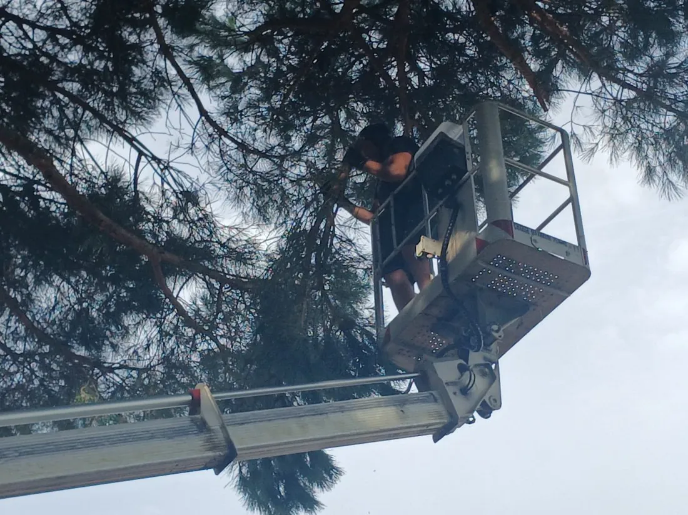
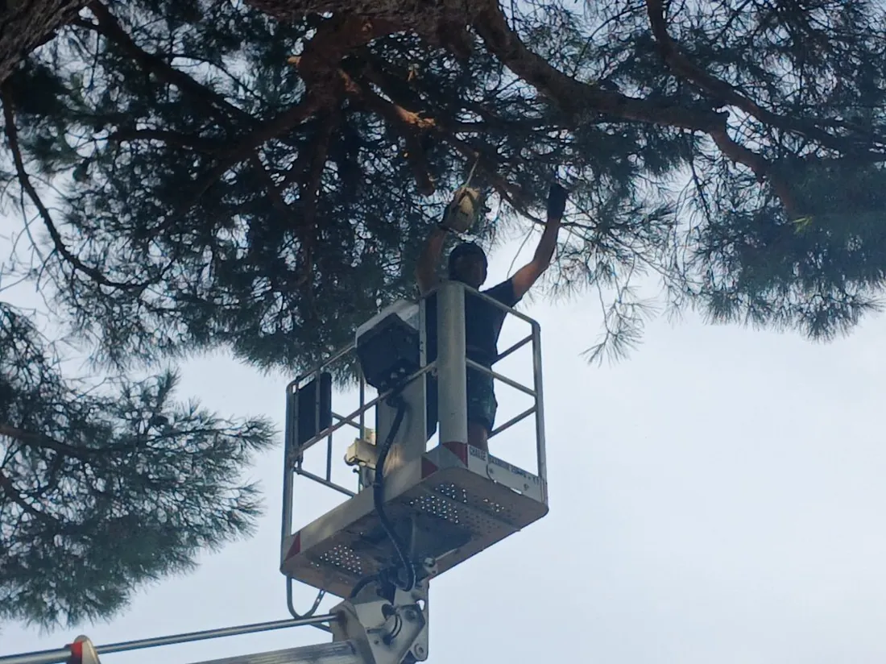
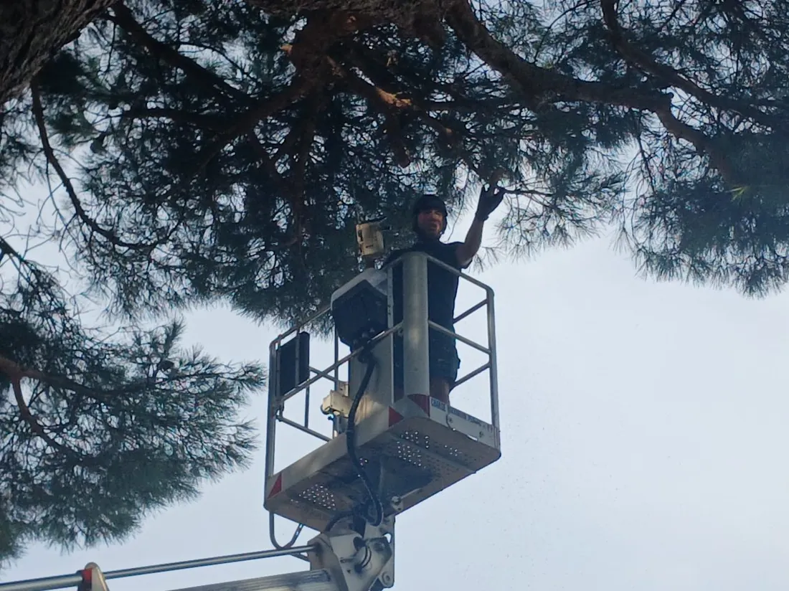

Un arbre de grande hauteur repris depuis la nacelle
Le houppier dépassait la hauteur de travail sur cordes utile pour ce chantier. La nacelle a permis d'atteindre les branches hautes une à une, sans jamais charger l'arbre du poids d'un grimpeur.
Le travail depuis le panier
Ces trois photos sont prises pendant l'intervention, depuis le sol. Elles ne forment pas une paire avant et après.



Ce qui a été fait
- Commune, Cenon, dans Bordeaux Métropole
- Arbre de grande hauteur, houppier repris branche par branche
- Matériel, nacelle élévatrice
- Accès permettant le stationnement et la stabilisation de l'engin
- Période [[À CONFIRMER : mois et année de l'intervention à Cenon]]
- Durée du chantier [[À CONFIRMER : durée de l'intervention]]
- Essence [[À CONFIRMER : essence de l'arbre, à ne pas deviner d'après la photo]]
- Hauteur [[À CONFIRMER : hauteur approximative de l'arbre]]
Nacelle ou cordes, ce n'est pas une question de confort
Les deux méthodes existent parce qu'elles ne répondent pas au même problème. Les cordes passent partout où un engin n'entre pas. La nacelle demande un accès et un sol portant, mais elle apporte trois choses que les cordes ne donnent pas.
Elle ne charge pas l'arbre. Sur un sujet dont on doute de la solidité du bois, ou dont les charpentières sont affaiblies, ne pas y suspendre le poids d'un grimpeur change tout. C'est souvent le critère qui tranche.
Elle permet ensuite de travailler en périphérie du houppier, là où les branches sont trop fines pour porter. Un grimpeur doit rester près du tronc et travailler à bout de bras, la nacelle amène l'opérateur au contact.
Elle raccourcit enfin le chantier. Moins de temps à s'installer, moins de déplacements dans l'arbre, et une descente immédiate en cas de besoin. Sur un arbre isolé avec un accès dégagé, comme ici, elle s'impose.
Ce que l'on nous demande sur l'élagage
Il faut séparer deux choses. Passé trente ans, le voisin ne peut plus exiger l'arrachage ni la réduction de hauteur d'un arbre planté trop près, c'est la prescription trentenaire de l'article 672 du Code civil. Le délai court à partir du jour où l'arbre a dépassé la hauteur permise, pas du jour de la plantation. En revanche il peut toujours exiger la coupe des branches qui avancent chez lui, ce droit est imprescriptible.
Sur un terrain privé, il n'existe pas d'autorisation générale à demander. Des règles locales peuvent s'appliquer, notamment si l'arbre se trouve dans un espace boisé classé ou s'il est protégé par le plan local d'urbanisme. Un appel à la mairie lève le doute en quelques minutes, et c'est elle aussi qu'il faut saisir pour un arbre situé sur le domaine public.
Quatre choses, et aucune ne se devine au téléphone. La hauteur, qui décide du matériel. L'accès, selon qu'une nacelle peut approcher ou qu'il faut monter sur cordes. Le volume de bois à descendre et à évacuer. Et la présence d'obstacles autour, toiture, clôture, réseau, qui impose de retenir chaque section. C'est pour cela que le devis se fait après une visite sur place, et qu'il est gratuit.